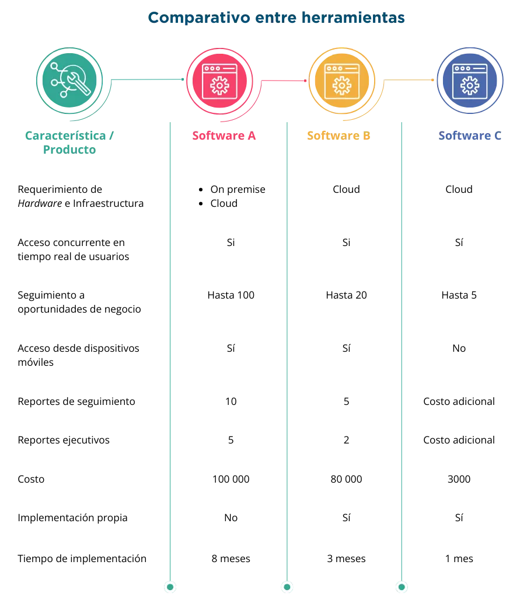
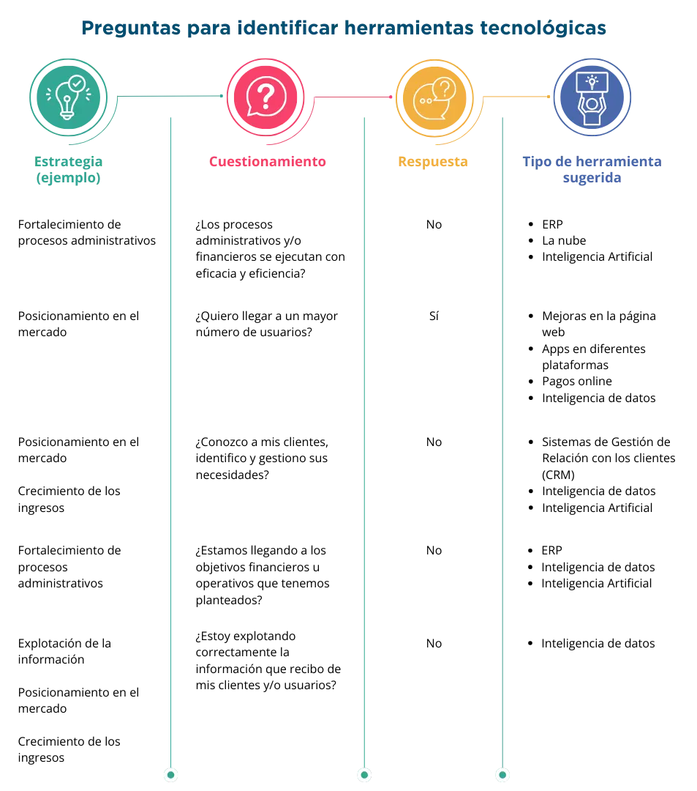

El desarrollo y avance en el uso de Internet ha propiciado un crecimiento exponencial en el uso de tecnologías digitales en todos los sectores.
Además, a partir de la pandemia de Covid-19 se ha presentado un incremento importante en el comercio digital, lo cual exige a las empresas pequeñas y medianas (pyme) acelerar su transformación digital a fin de mantener y, eventualmente, fortalecer su presencia en el mercado, a través del proceso que se describe en el presente eje temático.
Las pymes no pueden permanecer al margen de estos desarrollos y tienen que actualizar y planear adecuadamente su transformación digital. En este apartado se presenta una serie de herramientas que pueden contribuir significativamente a planear y ejecutar su transformación digital alineada a las estrategias de negocio.
Se da énfasis al tratamiento de datos, ya que, a la par del incremento en el uso de las tecnologías, se ha generado el crecimiento en su recepción y concentración por parte de las empresas, lo que ha llevado al fortalecimiento de las herramientas de análisis de datos e inteligencia artificial, que se utilizan para descifrar patrones que permitan alcanzar nuevos clientes, mercados y nichos, todo ello encaminado a lograr ventajas competitivas y enfrentar con buen éxito a la competencia.
Las pymes deben repensar y mejorar los procesos de negocio utilizando la tecnología como habilitador. Incluye la integración de herramientas digitales en todas las áreas de la empresa para mejorar la toma de decisiones, la eficiencia operativa y la satisfacción del cliente, para lo cual es esencial entender las necesidades específicas de la empresa y adaptar la estrategia de transformación digital en consecuencia.
Así, la transformación digital en las pymes es un proceso estratégico que implica la adopción de tecnologías y la mejora continua de procesos encaminados a mantenerse competitivos en un entorno empresarial cada vez más digital.
La transformación digital de una empresa es el proceso mediante el cual adopta el uso de nuevas herramientas tecnológicas en diferentes ámbitos, que van desde los procesos administrativos y operativos, la relación con clientes y usuarios, y la explotación de datos para generar estrategias competitivas y fortalecer su modelo de negocio.
Esta transformación es necesaria, pues la sociedad demanda cada vez más servicios digitales, por lo que, para no quedar rezagadas en el mercado, las pequeñas y medianas empresas necesitan replantear y fortalecer su estrategia digital a fin de mantener y mejorar su posición en el mercado, optimizar sus procesos financieros y administrativos, a fin de ser competitivos. Pero esto no se limita únicamente a la compra e implementación de herramientas tecnológicas, sino también la adopción de una nueva cultura organizacional, más ágil e innovadora.
De acuerdo con la experiencia de muchas empresas, la transformación digital permite a las pymes generar nuevos vínculos con sus clientes, obtener y transformar la información que reciben, para desarrollar estrategias de crecimiento y expansión, más acordes a la demanda de servicios, conforme se madura el tratamiento de los datos, es posible pasar de un análisis del pasado a la predicción de comportamientos futuros.
En resumen, una transformación digital exitosa permite a las empresas impulsar nuevas oportunidades estratégicas tales como:
Para transformarse digitalmente, la pyme debe instrumentar una serie de pasos que le permitan llegar al resultado de forma ordenada y exitosa. A continuación, se presenta una propuesta basada en la experiencia de diversas organizaciones que han ejecutado estos procesos.
El primer paso para adoptar la transformación digital es tener clara la estrategia de negocio, la misión, visión y objetivos de la empresa deben guiar los metas de la transformación digital y ser la base para definirla.
La estrategia de negocio es un plan integral diseñado para lograr los objetivos a largo plazo de una empresa. Esta estrategia implica la identificación de metas, la asignación de recursos y la planificación de acciones para guiar a la organización hacia el éxito. La estrategia de negocio abarca diversas áreas, como la definición de productos o servicios, la segmentación de mercado, la gestión financiera, la competencia y otros aspectos clave.
En tanto, la transformación digital se refiere a la integración de tecnologías digitales en todos los aspectos de la empresa, encaminados a mejorar la eficiencia, la innovación, toma de decisiones y la experiencia del cliente.
Las estrategias digitales buscan generar nuevas oportunidades de negocio o resolver problemas internos, lo cual debe permitir a una empresa crecer, mejorar su posicionamiento de mercado e incrementar sus beneficios económicos, ya sea a través del aumento de los ingresos o la disminución de los costos o una combinación de ambos, junto con otros objetivos que la alta dirección considere relevantes. Su diseño y aplicación dependerá de las características de la empresa, su nivel de madurez tecnológica y su entorno.
El siguiente paso es un análisis de la madurez tecnológica actual de la pyme pues es importante tener claridad sobre el nivel de dominio de las tecnologías digitales del que se parte, considerando además la cultura empresarial, el liderazgo, los recursos humanos, las comunicaciones, el manejo de la información, el seguimiento a procesos, entre otros. El Chequeo digital es una buena herramienta de auxilio que permite determinar los niveles de madurez y requerimientos de esas necesidades.
Los procesos de transformación tecnológica deben permitir a la pyme madurar paulatinamente, en todos los conceptos antes descritos conforme avanza la transformación tecnológica.
Considerando la estrategia de negocio y la madurez tecnológica de cada empresa, se puede identificar cuál es el tipo de transformación digital más apropiado en ese momento para la organización.
Es importante considerar que la transformación digital es un proceso paulatino y constante; no es posible ni conveniente pretender atacar todos los aspectos tecnológicos de la empresa para transformarlos simultáneamente. Lo recomendable es hacerlo paso a paso dando preferencia a aquellos cambios que impulsan de mejor manera la estrategia del negocio.
De acuerdo con publicaciones digitales de Amazon, los tipos principales de transformación digital que pueden adoptar las empresas se centran en los siguientes procesos (Amazon, 2023)
Se centra en la mejora de los flujos de trabajo, a través de la incorporación de tecnologías enfocadas en los procesos, tales como los sistemas transaccionales, esto permite la innovación, mejorando los procesos, facilitando la interacción entre los diferentes departamentos y funciones de la empresa, logran obtener mejores resultados empresariales. Un ejemplo de ello se observa cuando se implementa un nuevo sistema de gestión de viáticos que agiliza la entrega de recursos, a través de la automatización de alertas a los responsables, con adaptación automática a los destinos de viaje. Esto reduce costos y elimina conflictos.
Como parte de la transformación digital, es importante revisar que los procesos ejecutados dentro de la pyme son adecuados a fin de no automatizar procesos erróneos o inconclusos.
El modelo de negocio es la forma en que una empresa crea, entrega y captura valor para sus clientes, socios y accionistas. Es la lógica que sigue una empresa para conseguir ingresos y beneficios. Un modelo de negocio bien diseñado puede ser la clave para el éxito de una pyme, ya que le permite diferenciarse de la competencia, satisfacer las necesidades de los consumidores y generar valor para todos los involucrados.
Aquí la empresa debe evaluar el modelo negocio que ya se encuentra operando y replantearlo para atender nuevas necesidades incorporando soluciones digitales, lo cual permite mejorar la capacidad de respuesta y fortalecer la oferta de servicios que brinda la pyme. Un ejemplo se observa en los restaurantes pequeños que, durante la pandemia, desarrollaron aplicaciones web a través de las cuales los clientes podían consultar menús con imágenes multimedia y, solicitar comida con entrega a domicilio desde sus dispositivos móviles.
Un modelo de negocio puede incluir la introducción de nuevos productos o servicios digitales, la adopción de modelos de suscripción, o la transición hacia plataformas en línea.
Para profundizar en el tema de modelos de negocio te sugerimos consultar el eje temático del mismo título que se presenta en esta misma dimensión de Estrategia y transformación digital.
El dominio empresarial alude al conjunto de actividades, procesos, competencias y conocimientos específicos que caracterizan y definen las operaciones de una empresa en particular. El término abarca diversos aspectos fundamentales para el funcionamiento y éxito de una organización.
Se e busca llegar a nuevos mercados o segmentos a partir de la incorporación de infraestructura y/o herramientas nuevas; para ello se debe llevar a cabo un análisis de costos, beneficios y riesgos. Un ejemplo exitoso son las cadenas de super mercados, que han incorporado el cobro de servicios de terceros en sus cajas, cargando una comisión. Esto les genera ingresos usando infraestructura con la que ya contaban.
Se centra en aumentar el valor que se entrega a los clientes, a través de cambios en toda la organización; si se ejecuta adecuadamente, permite posicionar a la empresa por delante de sus competidores. Este tipo de cambios requiere de un proceso de análisis muy robusto para identificar qué tipo de herramientas hay que implementar.
Simultáneamente, con la de identificación de la transformación digital a adoptar, se deben fijar los objetivos y alcances del cambio organizacional, y tener claro hacia donde se deben dirigir los esfuerzos, pues esto facilita la alineación de los esfuerzos de todos los equipos de trabajo involucrados.
Los objetivos deben de ser específicos, medibles, alcanzables, realistas, temporalmente bien definidos, mejor conocidos como objetivos SMART, esto para que, una vez que se concluya la transformación digital, pueda evaluarse si esta fue exitosa o si requiere que se refuerce alguno de los componentes que la integran o incluso replantear alguno de ellos.
Una vez clarificados y definidos los objetivos a alcanzar en el proceso de la transformación digital se deben identificar y evaluar las herramientas que permitan alcanzarlos.
Por ejemplo, si se requiere reducir costos, lo que se buscará es implementar herramientas que permitan automatizar actividades e identificar desviaciones en el ejercicio de los recursos, para proceder a corregirlas. Si la prioridad fuera incrementar las ventas, entonces se impulsará la creación de aplicaciones móviles, páginas web, explotación del Customer Relationship Management (CRM), análisis de datos, procesos predictivos, por citar algunos.
Una adecuada selección de herramientas es sin duda un paso clave para alcanzar el objetivo de transformar digitalmente a la organización. Lo anterior exige hacer un análisis integral para tomar la mejor decisión, debe invitarse a los miembros clave del equipo a participar de esta, así como a expertos externos que contribuyan con conocimiento relevante; también ayudará mucho revisar casos de éxito en el uso de los instrumentos, asistir a demostraciones y pruebas de concepto. En otras palabras, hay que hacer acopio de información que permita aplicar correctamente cada herramienta e incluso, indagar sobre buenas prácticas e instrumentación.
A continuación, se presentan algunos criterios a considerar en la selección de las herramientas:
De igual forma es necesario explorar más de una opción de herramientas disponibles, hacer un análisis comparativo de las características, ventajas y desventajas de cada una, siempre enfocados en las necesidades que se desean cubrir y a los crecimientos estimados en el mediano plazo, para contar con un instrumento útil y flexible. Esto se puede hacer de forma muy sencilla comparando características de las herramientas, ello permitirá evaluar las ventajas y desventajas de cada una de ellas, a través de un cuadro como el que se muestra a continuación
Es importante que el proceso cuente con la asesoría de expertos en el uso de las herramientas, ya sean internos o externos, a fin de garantizar que la herramienta seleccionada permita la consecución de los objetivos, disminuir los riesgos y facilite su implementación.
Las herramientas son solo el medio para que la empresa cumpla con su estrategia de negocio y tenga mejores resultados, pero esta última es la que debe determinar la dirección que debe tomar la transformación digital.
A manera de ejemplo, se propone una lista de preguntas guía basadas en las estrategias más comunes observadas en las empresas, así como las posibles herramientas a utilizar para atender las necesidades detectadas.
Es importante que de este análisis se identifique ¿Qué se requiere modificar? y ¿Para qué? a partir de ello, se deberán identificar las herramientas tecnológicas que permitan alcanzar los objetivos de la pyme, centrándose en la creación de valor tanto para la empresa como para los clientes y/o usuarios a fin de afianzar su posición en el mercado e incluso crecer, ya sea en el mismo nicho o alcanzando nuevos canales de negocio.
Es necesario identificar al personal que acompañará los procesos de transformación digital dentro de la empresa, evaluando sus competencias digitales a fin de determinar si este requiere capacitación y de qué tipo, pues el recurso humano debe adentrarse en dichos procesos de forma óptima para hacerlos funcionar correctamente.
La capacitación, genera una mayor aceptación del cambio y el mejor aprovechamiento de las bondades de las herramientas, debe de ser una parte integral de la transformación digital.
Para la implementación de las herramientas que faciliten la transformación digital, se propone un desarrollo de tipo ágil a partir de un plan de trabajo apegado a los objetivos y alcances previamente definidos como parte de este proceso.
Una vez definido el plan, se deberán hacer los ajustes que permitan la liberación de funcionalidad de forma iterativa en ciclos cortos no mayores a seis semanas. Para cada ciclo se programan entregas de funcionalidades completas para su incorporación a los procesos de negocio; cada entrega es incremental, es decir la nueva complementa a la anterior, así sucesivamente hasta su conclusión.
La aplicación de metodologías ágiles tiene la ventaja de que, en caso de requerirse, se puedan hacer los ajustes rápidos de acuerdo con la funcionalidad y ponerse nuevamente en producción en periodos cortos, así se pueden lograr resultados de manera incremental y continua durante todo el proceso de implementación.
La mejor forma de saber si algo funciona bien es midiendo si se están alcanzado los objetivos propuestos. La transformación tecnológica no es la excepción, conforme se avanza en la puesta en operación de las herramientas tecnológicas definidas, se deben revisar los resultados y compararse con los objetivos que se pretendían alcanzar, de forma que se pueda verificar si la estrategia digital cumple satisfactoriamente con lo previsto o se tienen que hacer ajustes de algún tipo con el propósito de lograr los objetivos propuestos.
Las tecnologías, los mercados, clientes y estructuras corporativas, son cambiantes, por ello las empresas deben mantenerse en un proceso continuo de transformación tecnológica y digital, que les permita mantener la competitividad, incluso a través del análisis de información y toma de decisiones estratégicas para acceder a nuevos mercados, sectores o nichos.
En resumen, mantener la continuidad en los procesos de transformación digital facilita a las empresas, sin importar su tamaño, competir por más y mejores oportunidades de negocio.
A continuación, se presenta una descripción de las herramientas tecnológicas con mayor penetración en el mercado dada su usabilidad y fortalezas que podrían servir como primer paso para alcanzar mejoras estratégicas en la gestión de la pyme.
Funcionan como una herramienta para fortalecer la operación de la empresa son sistemas enfocados en la planeación de servicios empresariales, seguimiento y control de los recursos de la empresa, incluyen principalmente módulos de control contable, planeación y administración financiera, suministro de bienes y servicios, control operativo de la gestión, control de Recursos Humanos, manejo de inventarios, entre otros.
Sus principales objetivos son la estandarización y automatización de procesos, el control de las gestiones administrativas y financieras, agilizar la toma de decisiones directivas a través de la explotación de la información disponible.
Este tipo de aplicativos evita la duplicidad de datos dentro de la empresa, facilita la generación de reportes y consultas financieras, el seguimiento a indicadores y análisis de desviaciones para la eficaz toma de decisiones. También reducen tiempos de gestión al automatizar procesos.
Existen diferentes opciones de ERP en el mercado a continuación se presentan algunas referencias de ERP. Sugerimos consultar https://www.holded.com/es/blog/mejores-erp-libre
Los CRM (Customer Relationship Management, por sus siglas en inglés) son desarrollos enfocados a la gestión de la relación con los clientes, facilitan principalmente su registro, seguimiento y control, así como sus pedidos, oportunidades en proceso de venta y manejo de estrategias de marketing. Las herramientas de CRM permiten generar información estadística para que se puedan enfocar los esfuerzos a dar tratamientos personalizados a los clientes y usuarios y detectar nuevas oportunidades de negocio.
Este tipo de sistemas se utilizan para que, a través del seguimiento a los diferentes clientes y prospectos, se puedan establecer buenas relaciones cliente-proveedor a largo plazo; de igual forma permite la captación de nuevos clientes, por lo que es de gran ayuda para los equipos de ventas.
Los CRM permiten la explotación de los datos de las interacciones que la empresa tiene con los clientes, permite identificar nuevas necesidades, requerimientos, quejas, sugerencias de mejora, entre otros. A partir de ello, es posible definir nuevas estrategias para mantener o recuperar a los clientes, corregir fallas en la atención o todas aquellas que se consideren oportunas para fortalecer las ventas.
Existen diferentes opciones de CRM en el mercado, en el siguiente vínculo encontrarás Los 16 mejores CRM gratis en 2023 para emprendedores, autónomos y empresas
La nube. Es una de las herramientas más valiosas para las pequeñas y medianas empresas, ya que, a partir de un pago periódico, pueden acceder a infraestructura de servidores que se encuentra instalada remotamente para almacenar y/o respaldar información, alojar aplicativos, información, transaccionar servicios, por citar algunos servicios, a los cuales se puede acceder desde cualquier conexión a internet.
De igual forma, en la nube se pueden encontrar herramientas de Software como servicio conocidas como SaaS (Software as a Service), las cuales se ponen a disposición de los usuarios para su explotación desde la nube.
Uno de los ejemplos más comunes de nube son los servicios que brinda Google, cuando se hace uso de las herramientas de su suite. Se trata de un Software como servicio, mientras que los archivos e información generada del uso de las aplicaciones, se guardan en servidores remotos y, para poder consultar los documentos que se han creado, basta con entrar a la cuenta desde cualquier sitio donde se cuente con servicio de internet.
El uso de la nube incrementa la competitividad de las pequeñas y medianas empresas, al facilitar el uso de infraestructura y explotación de herramientas, sin que esto represente inversiones importantes de capital; permite la innovación tecnológica, la explotación de los datos, en general fortalece el desempeño de las organizaciones.
Aplicaciones móviles (Apps). Son desarrollos de software que pueden ser visualizados en dispositivos móviles como teléfonos inteligentes y tabletas, se distribuyen a través de las tiendas de venta de aplicaciones precargadas en los dispositivos.
El desarrollo y publicación de Apps tiene múltiples beneficios para las pymes, ya que permite que se pueda tener acceso a los clientes en cualquier lugar y hora; enviar y recibir publicidad constante al tener el aplicativo en el teléfono y/o dispositivo móvil del cliente. Asimismo, puede aportar datos del comportamiento del cliente para el análisis de datos, lo que se traduce en un incremento en las ventas y en la posibilidad de sacar provecho de los datos.
Las aplicaciones móviles impulsan el marketing digital con solo publicarse en tienda, ya que desde ahí se promocionan cada vez que un usuario busca una aplicación similar, adicionalmente el público percibe como una muestra de confiabilidad y fortaleza en el mercado aquellas empresas que tienen aplicaciones móviles.
Inteligencia de datos (Big Data). Es el análisis de un gran número de datos, permite conocer las tendencias de comportamiento, a través del uso de herramientas estadísticas, por ejemplo: facilita la identificación de posibles cambios en las preferencias de los clientes, reconocer errores o fallas en los procesos, por mencionar algunos usos.
De igual forma, las herramientas de Big Data contribuyen a la realización de diferentes tipos de análisis. La analítica descriptiva es aquella que permite analizar datos históricos para comprender cómo se ha comportado el negocio y cómo se encuentra en este momento, es decir analiza el pasado y describe el presente; por su parte, la analítica predictiva trata de predecir, a través del uso de herramientas estadísticas, cómo se van a comportar ciertas variables en el futuro, por ejemplo las ventas; el consumo de ciertos productos, el precio de las acciones de una compañía, etc., y por último la analítica prescriptiva que utiliza las herramientas de la analítica descriptiva y predictiva, para que, a partir de los resultados esperados, determinar las mejores decisiones estratégicas a seguir.
Lorena Ramírez de IEBS Digital School comparte Las 10 mejores herramientas de Big Data 2023, de consulta en https://www.iebschool.com/blog/mejores-herramientas-big-data/
Inteligencia Artificial (AI). La Inteligencia Artificial está impactando al mundo empresarial en la búsqueda de optimizar los procesos y los servicios. Es una disciplina de desarrollo de software a partir de la cual se busca que las computadoras imiten el pensamiento humano, un ejemplo son los chatbots que se encuentran en las páginas web y a través de los cuales los usuarios pueden hacer preguntas o dudas frecuentes, que se responden automáticamente sin que exista interrelación con otro ser humano, también permiten enviar publicidad, hacer campañas de marketing, entre otros muchos servicios. Para conseguirlo se utilizan herramientas de análisis de datos, aprendizaje automático (machine learning) y técnicas basadas en la lógica, que permiten el análisis e interpretación de eventos, arrojando resultados que facilitan la definición y ejecución de estrategias clave para el desarrollo de las empresas.
La inteligencia artificial es una tecnología con un amplio potencial para el desarrollo de las pymes, pero también representa grandes retos, entre los que se encuentran una mayor orientación a los datos, es decir se requiere orientar a todos los involucrados hacia un nuevo enfoque donde los datos son el insumo más relevante.
Sin una transformación digital que involucre a todas las áreas de la empresa, acercarse a la Inteligencia artificial no tendría los beneficios esperados para las pymes.
Las pequeñas y medianas empresas (pymes) pueden beneficiarse de una variedad de sistemas y herramientas para el desarrollo de inteligencia artificial (IA). A continuación, se presentan algunos sistemas útiles que pueden ser accesibles y adecuados para pymes:
Sistemas y herramientas para el desarrollo de inteligencia artificial
Plataformas de nube para IA:
Plataformas como Microsoft Azure, Amazon AWS, y Google Cloud Platform, ofrecen servicios de inteligencia artificial que incluyen aprendizaje automático, procesamiento de lenguaje natural (NLP) y análisis de datos. Estas plataformas permiten a las pymes acceder a recursos de IA sin la necesidad de grandes inversiones en infraestructura.
Herramientas de aprendizaje automático sin codificación:
Plataformas como IBM Watson Studio, Google AutoML y DataRobot proporcionan soluciones de aprendizaje automático sin necesidad de programación extensiva. Estas herramientas son ideales para pymes con recursos limitados en desarrollo de software.
Sistemas de procesamiento de lenguaje natural (NLP):
Herramientas como spaCy, NLTK y Hugging Face Transformers son útiles para empresas que deseen trabajar con procesamiento de lenguaje natural. Pueden aplicarse en tareas como análisis de sentimientos, extracción de información y generación de texto.
Plataformas de automatización de procesos robóticos (RPA):
Soluciones RPA, como UiPath y Automation Anywhere, son sistemas que permiten a las pymes automatizar tareas repetitivas mediante la emulación de las acciones humanas en sistemas digitales. Aunque no son específicamente de inteligencia artificial, pueden integrarse con capacidades de aprendizaje automático para mejorar la eficiencia.
Plataformas de analítica de datos:
Herramientas de analítica de datos, como Tableau, Power BI y Qlik, ofrecen capacidades de visualización y análisis de datos. Aunque no son puramente sistemas de IA, pueden integrarse con modelos de aprendizaje automático y proporcionar información valiosa, además de facilitar la visualización de los datos.
Sistemas de Chatbots:
Plataformas de desarrollo de chatbots, como Dialogflow, Microsoft Bot Framework y Rasa, permiten a las pymes implementar asistentes virtuales para interactuar con clientes y mejorar la atención al cliente.
Sistemas de gestión de datos para ML:
Herramientas como DVC (Data Version Control) y MLflow son útiles para gestionar y versionar datos y modelos de aprendizaje automático, facilitando el desarrollo colaborativo y la reproducción de resultados.
Plataformas de automatización de marketing:
Herramientas de automatización de marketing, como HubSpot y Marketo, a menudo incorporan elementos de IA para personalizar campañas, analizar datos y mejorar la segmentación de audiencia.
Es importante señalar que la elección de sistemas dependerá de las necesidades específicas de cada empresa. Al implementar soluciones de IA, las pymes deben considerar aspectos como la facilidad de uso, la escalabilidad y el costo total de la inversión. Además, la capacitación y el apoyo técnico son elementos esenciales para garantizar el éxito en la implementación y el aprovechamiento máximo de estas tecnologías.
Existen diferentes sistemas para el desarrollo de inteligencia artificial, se pueden encontrar fácilmente navegando en internet, el sitio web Somos Libres presenta los 10 mejores software de IA de código abierto, vale la pena consultarlo.
A continuación, se presentan factores comunes para tener en cuenta como elementos de la transformación digital, independientemente de las herramientas que se decida implementar.
Los datos: En el entorno actual se requiere una adecuada gestión de los datos, que se han convertido uno de los mayores activos de las empresas, es de suma importancia que se identifiquen aquellos que permitan, a través de su explotación, obtener información que resulte útil para la toma de decisiones.
La explotación de los datos debe de ser integral es decir no solo basta con tener los datos, es necesario que estos se correlacionen con el resto de la información con la que cuenta la organización, se debe evitar la información aislada, también conocida como silos, esto con el fin de que los datos puedan generar mayor valor para la pyme.
Protección de datos sensibles: La gran cantidad de datos a los que se tiene acceso en la actualidad, así como las diferentes fuentes que hay para obtenerlos implica que las empresas deban garantizar el adecuado uso de los datos personales y la protección de las bases de datos en que se almacenan, a fin de proteger y resguardar la identidad de los individuos conforme las regulaciones aplicables en cada país.
Protección de ataques cibernéticos (ciberseguridad): Las pyme deben proteger los datos de su negocio y de sus clientes de ataques maliciosos generados por terceros, a través del diseño de políticas de acceso de información, uso de herramientas compartidas, capacitación para la navegación segura de empleados y el uso de herramientas que protejan al negocio frente a las ciber amenazas del mundo digital como el uso de dispositivos seguros, instalando infraestructura enfocada a evitar intrusiones, incorporando sistemas de monitoreo de accesos, por citar algunos.
Para concluir exitosamente la transformación digital dentro de una pyme se deberán tomar en cuenta los siguientes factores:
Generar una estrategia de transformación digital basada en los objetivos estratégicos:
Para llegar a la meta de la transformación digital es importante saber a dónde se quiere llegar, por lo que de la mano de la estrategia de negocio se deben buscar las herramientas que impulsen la consecución de los objetivos estratégicos.
La estrategia de transformación digital debe empatar y fortalecer la estrategia de negocio, facilitar la consecución de objetivos y el crecimiento de la pyme.
Adaptabilidad y Resiliencia:
Los procesos de transformación requieren adaptarse a entornos cambiantes y responder rápidamente a los retos que se presenten durante el proceso.
Liderazgo:
Las personas encargadas de la dirección del proceso de transformación digital deben tener la capacidad de establecer la visión y directivas claves, apoyadas por la organización. De preferencia estas personas deben poseer un conocimiento tanto del negocio como de las tecnologías digitales, así como un liderazgo para lograr impactar a colegas y personal involucrado en la transformación digital.
Recurso humano adecuado:
Es imprescindible identificar las competencias digitales de los miembros de la empresa y fortalecerlas para que nadie se quede atrás, es necesario que todos los miembros de la organización se sientan parte de la transformación digital.
En resumen, la transformación digital para pymes es un proceso estratégico que implica la adopción de tecnologías y la mejora continua de procesos para mantenerse competitivos en un entorno empresarial cada vez más digital. Es esencial entender las necesidades específicas de la empresa y adaptar la estrategia de transformación digital en consecuencia.
Albert, T. (2016). Medición de la madurez de la tecnología: aspectos teóricos. Springer. https://www.mincotur.gob.es/Publicaciones/Publicacionesperiodicas/EconomiaIndustrial/RevistaEconomiaIndustrial/393/NOTAS.pdf
AlexaCor. (2021). ¿Qué son y para qué sirven las habilidades digitales? 10 competencias clave. Platzi. https://platzi.com/blog/emp-habilidades-digitales/
Amazon (s/f)¿Qué es la transformación digital? AWS.https://aws.amazon.com/es/what-is/digital-transformation/
Cloud ERP for product centric entreprises. (2023). Gartner peer insights. https://www.gartner.com/reviews/market/cloud-erp-for-product-centric-enterprises
Desarrollo de Apps para Pymes. (s/f). Cámara de Valencia, Tecnología para los negocios. Recuperado de https://ticnegocios.camaravalencia.com/servicios/tendencias/desarrollo-apps-pymes/#1505922054217-e9e30bad-189a
Fong, C. (2017). El cambio tecnológico y otros factores que soportan la ventaja competitiva. En C. Fong, Competitividad e internacionalización de la pyme en México. Análisis sectorial y empresarial pp. 109-140. Universidad de Guadalajara
Furr, N., Shipilov, A., Rouillard, D., & Hemon-Laurens, A. (2022). The 4 Pillars of Successful Digital Transformations. Harvard Business Review. https://hbr.org/2022/01/the-4-pillars-of-successful-digital-transformations?ab=at_art_art_1x4_s01
Marco, J. N., Morales, D. V., Lorente, J., Vizcaino, J., & Palacios, J. (2021). Economía Digital en la Unión Europea: Apoyando a las pymes. Sanz y Torres, S.L.
Morales Cáceres Alejandro. (2020). El Impacto de la inteligencia artificial en la protección de datos personales. World Compliance Association. https://www.worldcomplianceassociation.com/2767/articulo-el-impacto-de-la-inteligencia-artificial-en-la-proteccin-de-datos-personales.html#:~:text=La%20protecci%C3%B3n%20de%20los%20datos,de%20datos%20personales%5B1%5D.
Woerner, S. L., Weill, P., & Sebastian, I. M. (2022).Future ready: The four pathways to capturing digital value. Harvard Business Review Press.